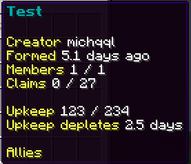
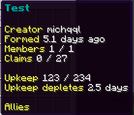

My original custom factions core was called Guilds and was a closed source commission
Eventually, after getting into Rust (not the language, the game), I became heavily inspired
to recreate this in Minecraft
About the project
The original Guilds plugin was different from other factions plugins and required
special upgrades to protect your claim from raiders.
In total, this project has over 13,000 lines of code so far.
The project took several months, and is still in the works, but taught me a lot of
valuable lessons over that time.
The project taught me a lot about working with Chunks to store claims,
how to efficiently traverse these claims and so forth.
My second revision, this time a personal project, proved to myself the amount I had
learnt in the two years since initially starting Guilds.
So far, the project has player and admin factions, claims, members, roles and all the
basic commands to get setup.
This project is in active development by me and I hope to have a release within a month.
My next goals to add are base building as well as upkeep, in a similar style to Rust.
The claim map
The client I was working with did not want to have the map displayed via chat as many other factions servers do.
Instead, the map was to be shown through a GUI, as demonstrated on the left.
To achieve this task, a lot of complicated maths went in behind the scenes to convert the set of chunks into a
matrix, which I could then apply offsets to, allowing the player to move the map around to view a larger area than
the otherwise 5x5 grid.
 

Version 2
Currently, version 2 is a work in progress. However, so far the basic factions core is implemented, including:
- Factions structure
- Factions members and roles
- Claims
- All basic commands
- Admin commands
Ideas from Rust I want to add are base building mechanics, raiding, upkeep, structures/world events.